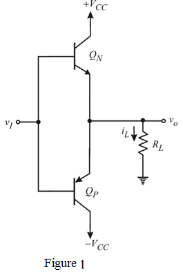

Step 1:
The class B output stage is shown in Figure 1.

Step 2:
The power supply is greater than the corresponding peak sin-wave output voltage.
The average load power is,

Finding the peak output voltage
Substitute , in equation.
Therefore, the power supply voltage is,
Therefore, the power supply voltage is .
Step 3:
The current drawn from each supply will consist of half-sine waves of peak amplitude is
.
The peak current from the supply is
Therefore, the peak current from the supply is.
Step 4:
The average power drawn from the each power supply is
The average power drawn from the supply is .
Step 5:
The total supply power is
Therefore, the total power supply is .
Step 6:
The power conversion efficiency of an output stage is defined as

Therefore, the power conversion efficiency is .
Step 7:
The maximum power dissipated in each transistor is,
Therefore, the maximum power dissipated in each transistor is  .
.